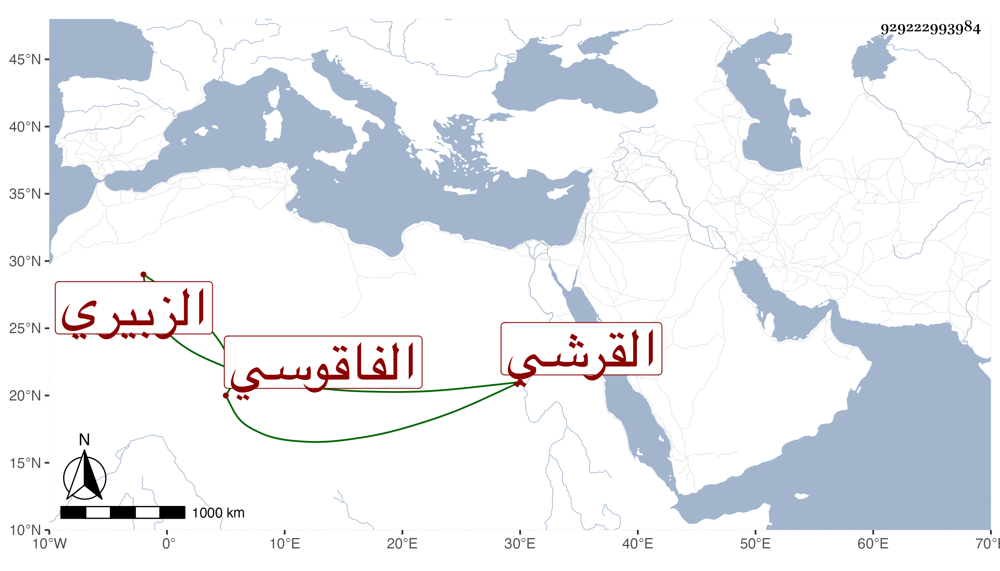

0902Sakhawi.DawLamic.ITO20230111-ara1.EIS1600.929222993984
Biography ID: 929222993984
644
فاطمة ابنة محمد بن حسن بن سعيد بن محمد بن يوسف بن حسن أم هانئ ابنة ناصر الدين القرشي الزبيري الفاقوسي أخت محمد وعبد الرحمن الماضيين وأبوهم . ولدت في ليلة الثلاثاء ثالث رجب سنة ثمان وثمانين وسبعمائة وأسمعها أبوها من التنوخى مشيخة ابن فضل الله ، وأجاز لها أبو هريرة بن الذهبي وابن عرفة وعمر ابن ايدغمش وأخذ عنها من أصحابنا النجم بن فهد ، وماتت قريب الاربعين ظنا .
